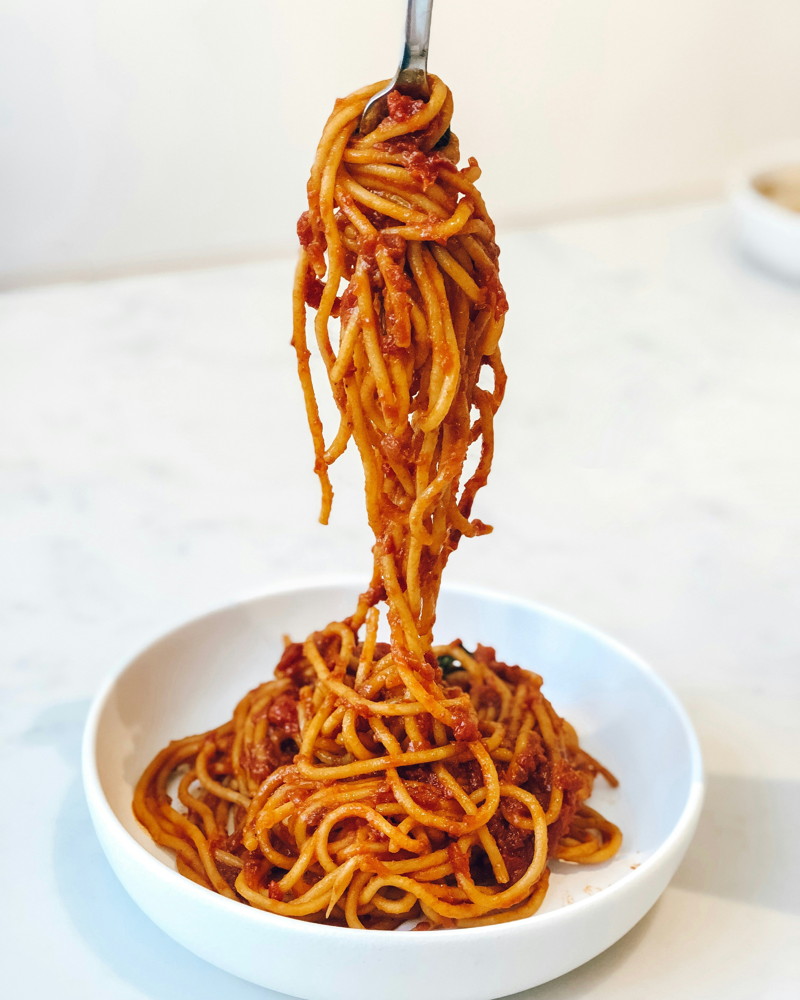

Back to Home
Spaghetti

Description
Spaghetti is a popular Italian pasta dish made with long, thin noodles and a variety of sauces.
Ingredients
- Spaghetti noodles
- Tomato sauce
- Ground beef or meatballs (optional)
- Garlic
- Olive oil
- Salt and pepper
- Parmesan cheese (optional)
Instructions
- Cook the spaghetti noodles according to the package instructions. Drain and set aside.
- In a pan, heat olive oil and sauté minced garlic until fragrant.
- Add ground beef or meatballs to the pan and cook until browned. Drain any excess fat.
- Pour tomato sauce into the pan with the meat and simmer for 10-15 minutes. Season with salt and pepper to taste.
- Serve the sauce over the cooked spaghetti noodles. Top with grated Parmesan cheese if desired.
- Enjoy your delicious spaghetti!